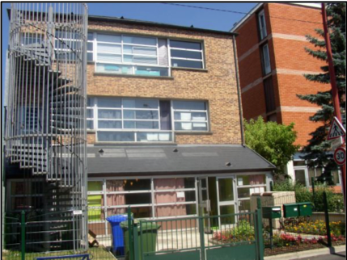
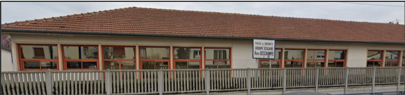
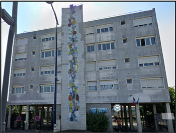
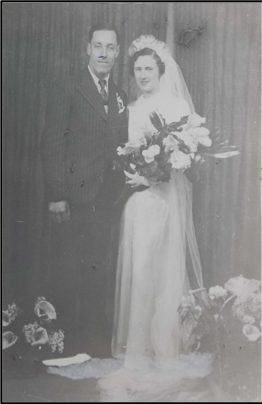
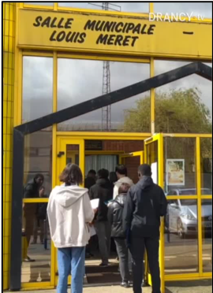
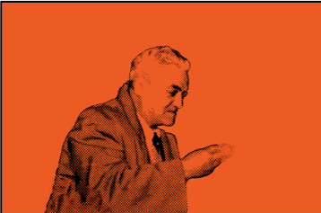
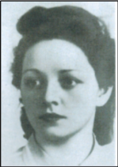
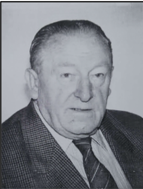
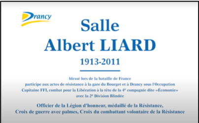
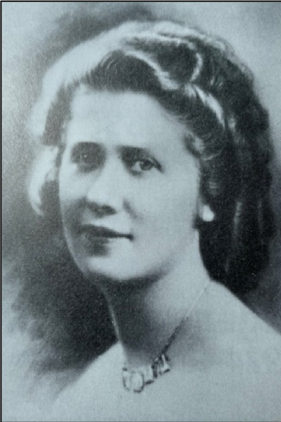

Les noms de salle municipale, d’école, de collège, de square
BRONSZTEIN, Simon
 Né le 23 janvier 1918 à Ciechanów (Pologne), fusillé le 23 avril 1942 à Nantes, terrain militaire du Bêle (Loire-Atlantique). Avant la guerre, il exerçait la profession de vendeur en bonneterie et militait au sein des Jeunesses communistes de Drancy. Fils d’immigrés juifs polonais arrivés en France en mai 1931, il est naturalisé français en janvier 1939 et participe aux combats de mai-juin 1940. Démobilisé le 17 janvier 1941, il rentre chez lui et se retrouve sans travail. Accusé de participer à une manifestation organisée par les Jeunesses communistes clandestines dans la soirée du 13 août 1941, il est arrêté par les autorités allemandes, jugé par une cour allemande et interné administrativement le 25 août. Il est transféré le 16 septembre au camp de Choisel à Châteaubriant. Après un attentat commis le 8 avril 1942 à Paris contre un soldat allemand, les auteurs n’ayant été ni identifiés ni arrêtés, Simon Bronsztein est choisi comme otage par les Allemands pour être exécuté, avec trois autres compagnons, à titre de représailles. L’exécution a eu lieu le 23 avril 1942. D’abord inhumé anonymement au cimetière de Grandchamp, il repose aujourd’hui au carré militaire du cimetière de Drancy. Quant aux autres membres de sa famille – ses parents, sa sœur et son jeune frère – ils ont été arrêtés lors de la rafle du Vélodrome d’Hiver du 16 juillet 1942. Tous sont morts à Auschwitz. Une école maternelle et une rue portent son nom à Drancy.
DESCHAMPS, René
 Né le 20 octobre 1902 à Poitiers (Vienne), mort en déportation le 19 septembre 1942 à Auschwitz. Résidant à Drancy au 60 rue de la Mare, il est élu conseiller municipal communiste de la ville le 5 mai 1935. Non mobilisable en septembre 1939, il signe « l’Appel aux Drancéens » à l’automne 1939 qui enjoint les élus « à continuer leur mandat dans le cadre des lois républicaines ». Cet engagement lui vaut d’être déchu de son mandat le 15 février 1940 sur ordre de la préfecture. Plus tard, après avoir été arrêté, il est déporté à Auschwitz, où il meurt le 19 septembre 1942. Une école élémentaire et une rue portent son nom à Drancy.
DEWERPE René
 Né en 1918, exécuté en août 1944 dans la région de Royan (Charente-Maritime). Membre des Jeunesses communistes, il fut mobilisé en 1939. Après l’armistice, il rejoint la résistance et fait partie, dès 1941, des jeunes résistants de Drancy. Le Front national l’envoie plus tard dans la région de Royan, où il se distingue lors des combats pour libérer La Rochelle. Blessé, il est hospitalisé sous un faux nom. Il est toutefois retrouvé par la Gestapo et torturé à mort le 2 août 1944. Son nom a été donné à un stade, un square et une école à Drancy.
JORISSEN, Jacques
 Né le 27 mai 1918 à Paris dans le XIIIe arrondissement, fusillé le 23 avril 1942 à Nantes (Loire-Atlantique). Il habitait Drancy, où il exerçait la profession de peintre en bâtiment. Marié depuis le début de l’année 1940 à une militante communiste membre de l’Union des jeunes filles de France (UJFF), il était lui-même ancien secrétaire des Jeunesses communistes de Drançy. Dès le début de l’Occupation, il vit dans la clandestinité et diffuse pour le Parti communiste des tracts imprimés chez lui. Il est arrêté sur dénonciation le 6 novembre 1940 par la police française et incarcéré à la prison de la Santé. Condamné à six mois de prison, il est transféré au camp de Choisel après avoir purgé sa peine, puis à Nantes. Il fait partie des quatre otages fusillés le 23 avril 1942 en représailles à un attentat commis à Paris le 8 avril contre un soldat allemand. D’abord inhumé anonymement au cimetière de Grandchamp, il repose aujourd’hui au carré militaire du cimetière de Drancy. Il a été reconnu mort pour la France. Un collège, une école maternelle, une école élémentaire et une rue porte son nom à Drancy.
MERET, Louis
 Né le 17 novembre 1899 à Dunkerque (Nord), mort le 12 juin 1989 à Fontenay-les-Briis (Essonne). Installé depuis 1923 à Drancy, où il exerce le métier de cheminot au dépôt du Bourget-Drancy, il adhère au Parti communiste en 1924 et devient membre du secrétariat du sous-rayon de Drancy jusqu’en 1939. Révoqué de la SNCF au début de la guerre en septembre 1939, il est arrêté et interné au fort Baillet. Il est toutefois libéré et réintégré au dépôt de Bobigny en février 1941. Il s’engage ensuite dans la Résistance et devient en 1944 membre du comité de section de Drancy. Il participe aux combats de la Libération de Drancy comme F.F.I. Après la guerre, il prend sa retraite en 1949 mais poursuit ses activités de syndicaliste : responsable retraités pour l’Union Nord de la Fédération CGT des cheminots de 1951 à 1953, membre du bureau national de l’Union fédérale des retraités de 1958 à 1968. Une salle municipale et un square portent son nom à Drancy.
ROULAUD, Albert, dit Gaston
 Né le 3 avril 1889 à Périgueux et mort le 14 mars 1959 à Drancy. Il est cheminot de 1912 à 1920 et adhérant du Parti Socialiste. Arrivé à Drancy dans les années 1920, il adhère au Parti Communiste et travaille comme tourneur, facteur puis comptable. Il entre au conseil municipal de Drancy sous le mandat du maire Jean-Louis Berrar puis son élection est annulée sous l’État Français Durant la guerre, il sera résistant au sein du mouvement Franc-Tireurs et Partisans. À la Libération, il devient maire du Comité Local de Libération de Drancy et maire de la commune lors des scrutins de 1945, 1947 et 1953 jusqu’à sa mort en 1959. Une cité porte son nom à Drancy.
FROMOND, Francine
 Née le 2 octobre 1917 à Paris dans le XIXe arrondissement, fusillée le 5 août 1944 dans la prison de Fresnes (Val-de-Marne). Résidant avec sa famille aux Lilas, dans une petite maison ouvrière, Francine Fromond obtient le certificat d’études et devient à l’âge de treize ans vendeuse, puis sténodactylo. En septembre 1933, elle adhère à l’Union des jeunes filles de France (UJFF) et acquiert très vite des responsabilités importantes au sein des différentes sections communistes de la région est parisienne. Elle devient secrétaire de l’Union des jeunes filles de France pour la région Paris-Est en 1938, après avoir séjourné en URSS, où elle s’est formée au rôle d’agent de liaison et de technicienne radio. Présente en Belgique lors de l’attaque allemande à l’ouest en mai 1940, elle est arrêtée mais rapidement libérée après intervention de l’ambassadeur soviétique. Elle se rend ensuite en URSS, où elle poursuit sa formation dans le domaine de la liaison par radio. Parachutée en France avec d’autres agents, elle est arrêtée le 30 juillet 1943 et livrée aux Allemands. Torturée à Lyon pendant plusieurs jours par la Gestapo, elle est ensuite transférée en août à la prison de Fresnes. Traduite devant un tribunal de guerre et condamnée à mort pour espionnage, elle est fusillée le 5 août 1944. Une école maternelle porte son nom à Drancy.
LIARD, Albert
 Né le 5 juin 1913 à Wizernes dans le Pas-de-Calais, mort en 2011, il est mobilisé dès le début de la guerre en septembre 1939 dans le 237eme régiment d’infanterie basé près de la frontière allemande. Après avoir été touché par une balle dans le cou le 9 juin 1940, il est hospitalisé puis démobilisé. Il reprend alors son métier de comptable à Drancy mais la collaboration et l’occupation lui sont vite insupportables. C’est ainsi qu’il trouve le chemin de la Résistance chez son coiffeur et ami René Janvier qui a constitué à Drancy un groupe de résistance du Front National à partir du printemps 1941. Il va alors distribuer des tracts, saboter des lignes de téléphone, saboter des lignes d’orientation des trains dans la gare du triage du Bourget, aider les jeunes à échapper au S.T.O. Le 10 juin 1944, Albert Liard est nommé capitaine F.F.I. Lors des combats de la Libération à Drancy, il participe au déminage des installations que les nazis projetaient de détruire.  e 27 août il participe aux combats de la plaine du Blanc-Mesnil aux côtés des chars de la 2eme DB. Médaillé de la résistance, Croix de Guerre, Croix du combattant, Croix du Combattant Volontaire de la Résistance, officier de la Légion d’Honneur et Président d’honneur de l’U.F.A.C (Union Française des Associations de Combattants), il a été de nouveau honoré par l’inauguration d’une salle municipale à son nom au 12 rue Etienne Dolet à Drancy en 2013.
QUATREMAIRE, Jacqueline
 Née le 18 octobre 1918 près de Mortagne-au-Perche (Orne), morte le 15 juin 1943 à Auschwitz. Installée avec ses parents en région parisienne en 1934 – son père fut élu maire communiste de Noisy-le-Sec en 1936 –, elle rejoint le Parti communiste en 1937. Pendant l’Occupation, elle rejoint la Résistance et devient agent de liaison chargé de l’organisation et de la diffusion de la propagande clandestine. Elle est arrêtée avec une soixantaine d’autres résistants le 16 juin 1942 par la police au terme d’une filature de plusieurs mois. Détenue après son interrogatoire au fort de Romainville, elle est déportée le 24 janvier 1943 depuis Compiègne dans un convoi de 230 femmes à destination d’Auschwitz, matricule numéro 31641. Affectée à l’infirmerie, elle meurt le 15 juin 1943 après avoir contracté la phtisie. Germaine Quatremaire, mère de Jacqueline, dépose plainte le 3 octobre 1945 devant la commission d’épuration de la police, en déclarant notamment que sa fille « a été arrêtée le 17 juin 1942 pour activité politique clandestine par plusieurs inspecteurs ». Jacqueline Quatremaire a été homologuée au titre de la Résistance intérieure française (RIF), et Déportée internée résistante (DIR). Son nom est porté par une rue et une école maternelle à Drancy.